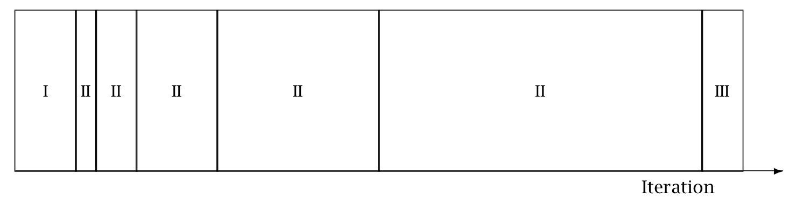

MCMC Sampling
This chapter presents the two Markov chain Monte Carlo (MCMC) algorithms used in Stan, the Hamiltonian Monte Carlo (HMC) algorithm and its adaptive variant, the no-U-turn sampler (NUTS), along with details of their implementation and configuration. The default sampler is NUTS with a diagonal mass matrix (more details below).
Hamiltonian Monte Carlo
Hamiltonian Monte Carlo (HMC) is a Markov chain Monte Carlo (MCMC) method that scales well in dimension due to its use of gradients of the log density function being sampled. It uses an approximate Hamiltonian dynamics simulation based on numerical integration which is then corrected by performing a Metropolis acceptance step.
Gradients of the target log density function allow HMC to follow the Hamiltonian flow in order to efficiently generate long-distance proposals with high acceptance rates. Neal (2011) provides an introduction to HMC, Betancourt (2017) expands on the geometric concepts and introduces the multinomial NUTS that Stan uses, and Bou-Rabee et al. (2025) provides a more theoretical introduction with correctness proofs for the version of NUTS introduced by Betancourt:2017.
Target density
The goal of sampling is to draw from a density \(p(\theta)\) for parameters \(\theta\). This is typically a Bayesian posterior \(p(\theta \mid y)\) given data \(y\), and in particular, a Bayesian posterior coded as a Stan program.
Auxiliary momentum variable
HMC introduces auxiliary momentum variables \(\rho\) and draws from a joint density
\[ p(\rho, \theta) = p(\rho \mid \theta) p(\theta). \]
In most applications of HMC, including Stan, the auxiliary density is a multivariate normal that does not depend on the parameters \(\theta\),
\[ \rho \sim \mathsf{MultiNormal}(0, M), \]
where \(M\) is a positive definite mass matrix. The mass matrix functions as a metric and is equivalent to having a linear preconditioner; see Betancourt (2017) for details.
Stan estimates a mass matrix during warmup using the covariance of the warmup draws. The mass matrix will be set to the inverse of the covariance estimate of the warmup draws, or to the inverse of the diagonal of the covariance estimate of the draws. Using the inverse covariance for a multivariate normal preconditions back to a standard normal. Mass matrix adaptation is much less effective when the posterior curvature (i.e., the Hessian) varies through the target density, as it does, for example, in hierarchical models without a lot of data per level.
The Hamiltonian
The joint density \(p(\rho, \theta)\) defines a Hamiltonian
\[ \begin{array}{rcl} H(\theta, \rho) & = & - \log p(\rho, \theta) \\[3pt] & = & - \log p(\rho \mid \theta) - \log p(\theta). \\[3pt] & = & T(\rho \mid \theta) + V(\theta). \end{array} \]
The two terms into which it separates are treated in the Hamiltonian dynamics as a potential energy function defined by \[ V(\theta) = - \log p(\theta), \] and a kinetic energy function defined by \[ T(\rho) = - \log p(\rho \mid M). \] Here, \(\log p(\rho \mid M) = \log \textrm{MultiNormal}(\rho \mid 0, M)\), so that \[ T(\rho) = \frac{1}{2} \rho^\top M^{-1} \rho + \textrm{const}, \] where the constant does not depend on \(\rho\), only on the fixed \(M\).
Generating transitions
Starting from the current value of the parameters \(\theta\), a transition to a new state is generated in two stages before being subjected to a Metropolis accept step.
First, a value for the momentum is drawn independently of the current parameter values, \[ \rho \sim \mathsf{MultiNormal}(0, M). \]
As a consequence, momentum does not persist across iterations.
Next, the joint system \((\theta,\rho)\) made up of the current parameter values \(\theta\) and new momentum \(\rho\) is evolved via Hamilton’s equations. The momentum being independent of the target density results in simple derivatives of the Hamiltonian, \[ \dfrac{d \theta}{d t} = \dfrac{\partial}{\partial \rho} T(\rho) \] and \[ \frac{d \rho}{d t} = -\dfrac{\partial}{\partial \theta} V(\theta). \]
Leapfrog integrator
The last section leaves a two-state differential equation to solve. Stan, like most other HMC implementations, uses the leapfrog integrator, which is a numerical integration algorithm that’s specifically adapted to provide stable results for Hamiltonian systems of equations.
Like most numerical integrators, the leapfrog algorithm takes discrete steps of some small time interval \(\epsilon\). The leapfrog algorithm begins by drawing a fresh momentum term independently of the parameter values \(\theta\) or previous momentum value.
\[ \rho \sim \mathsf{MultiNormal}(0, M). \] It then alternates half-step updates of the momentum and full-step updates of the position.
\[\begin{align} \rho &\leftarrow \rho \, + \, \dfrac{\epsilon}{2} \, \nabla \, \log p(\theta \mid y) \\[6pt] \theta &\leftarrow \theta \, + \, \epsilon \, M^{-1} \, \rho \\[6pt] \rho &\leftarrow \rho \, + \, \dfrac{\epsilon}{2} \, \nabla \, \log p(\theta \mid y) \end{align}\]
By applying \(L\) leapfrog steps, a total of \(t = L \cdot \epsilon\) time is simulated. The resulting state at the end of the simulation (\(L\) repetitions of the above three steps) will be denoted \((\rho^{*}, \theta^{*})\).
The leapfrog integrator’s error is on the order of \(\epsilon^3\) per step and \(\epsilon^2\) globally, where \(\epsilon\) is the time interval (also known as the step size); Leimkuhler and Reich (2004) provide a detailed analysis of numerical integration for Hamiltonian systems, including a derivation of the error bound for the leapfrog integrator.
Metropolis accept step
If the leapfrog integrator were perfect numerically, there would no need to do any more randomization per transition than generating a random momentum vector. Instead, what is done in practice to account for numerical errors during integration is to apply a Metropolis acceptance step, where the probability of keeping the proposal \((\rho^{*}, \theta^{*})\) generated by transitioning from \((\rho, \theta)\) is
\[ \min\left( 1, \dfrac{p(\theta^*, \rho^*)}{p(\theta, \rho)} \right) = \min \! \left( 1, \ \exp \! \left(\log p(\theta^*, \rho^*) - \log p(\theta, \rho) \right) \right). \]
If the proposal is not accepted, the previous parameter value is returned for the next draw.
Algorithm summary
The Hamiltonian Monte Carlo algorithm starts at a specified initial set of parameters \(\theta\); in Stan, this value is either user-specified or generated randomly. Then, for a given number of iterations, a new momentum vector is Gibbs sampled (this step is always accepted) and the current value of the parameter \(\theta\) is updated using Metropolis-within-Gibbs where the proposal is generated using the leapfrog integrator with discretization time \(\epsilon\) and number of steps \(L\) according to the Hamiltonian dynamics. Then a Metropolis acceptance step is applied, and a decision is made whether to update to the new state \((\theta^{*}, \rho^{*})\) or keep the existing state.
HMC algorithm parameters
The Hamiltonian Monte Carlo algorithm has three parameters which must be set,
- discretization time \(\epsilon\) (aka step size),
- metric \(M\) (aka mass matrix), and
- number of steps taken \(L\).
In practice, sampling efficiency, both in terms of iteration speed and iterations per effective sample, is highly sensitive to these three tuning parameters, as shown by Hoffman and Gelman (2014).
If \(\epsilon\) is too large, the leapfrog integrator will be inaccurate and too many proposals will be rejected. If \(\epsilon\) is too small, too many small steps will be taken by the leapfrog integrator leading to long simulation times per interval. Thus the goal is to balance the acceptance rate between these extremes.
If \(L\) is too small, the trajectory traced out in each iteration will be too short and sampling will devolve to a random walk. If \(L\) is too large, the algorithm will do too much work on each iteration.
If the metric \(M\) is a poor estimate of the local curvature (negative Hessian of the target log density \(\log p(\theta)\)) at some position (\(\theta\)) being visited on a Hamiltonian trajectory, the step size \(\epsilon\) must be kept small to maintain arithmetic precision. This leads to a large \(L\) to compensate, and can dramatically slow down sampling.
Integration time
The actual integration time is \(\epsilon \cdot L\), a function of number of steps. Some interfaces to Stan set an approximate integration time \(t\) and the discretization interval (step size) \(\epsilon\). In these cases, the number of steps will be rounded down as
\[ L = \left\lfloor \frac{t}{\epsilon} \right\rfloor. \]
and the actual integration time will still be \(L \, \epsilon\).
Automatic parameter tuning
Stan is able to automatically optimize \(\epsilon\) to match an acceptance-rate target, able to estimate \(M\) based on warmup sample iterations, and able to dynamically adapt \(L\) on the fly during sampling (and during warmup) using the no-U-turn sampling (NUTS) algorithm Hoffman and Gelman (2014).
Warmup Epochs Figure. *Adaptation during warmup occurs in three stages:
Stage I. The initial adaptation window uses a unit mass matrix and adapts step size to find the bulk of the probability mass.
Stage II. A series of expanding adaptation intervals (II) is visited, with the draws generated during each used to estimate the inverse mass matrix as the (diagonal of the) sample covariance.
Stage III. A final adaptation interval for fine-tuning step size.
Iteration numbering starts at 1 on the left side of the figure and increases to the right.*

When adaptation is engaged (it may be turned off by fixing a step size and metric), the warmup period is split into three stages, as illustrated in the warmup adaptation figure, with two fast intervals surrounding a series of growing slow intervals. Here fast and slow refer to parameters that adapt using local and global information, respectively; the Hamiltonian Monte Carlo samplers, for example, define the step size as a fast parameter and the (co)variance as a slow parameter. The size of the initial and final fast intervals and the initial size of the slow interval are all customizable, although user-specified values may be modified slightly in order to ensure alignment with the warmup period.
The motivation behind this partitioning of the warmup period is to allow for more robust adaptation. These intervals may be controlled through the following configuration parameters, all of which must be positive integers.
Adaptation Parameters Table. The parameters controlling adaptation and their default values.
| parameter | description | default |
|---|---|---|
| initial buffer | number of position adaptation steps | 75 |
| window | initial mass matrix adaptation interval size | 25 |
| term buffer | number of final step size adaptation steps | 50 |
If a smaller total number of warmup iterations is given, these are scaled down and at some point get so small that a warning is emitted when they are unlikely to be sufficient to carry out reliable adaptation.
Discretization-interval adaptation parameters
As introduced by Hoffman and Gelman (2014) for NUTS, Stan’s HMC and NUTS algorithms utilize the dual averaging algorithm of Nesterov (2009) to optimize the step size.1
This warmup optimization procedure is extremely flexible and for completeness, Stan exposes each tuning option for dual averaging, using the notation of Hoffman and Gelman (2014). In practice, the efficacy of the optimization is sensitive to the value of these parameters, but we do not recommend changing the defaults without experience with the dual-averaging algorithm. For more information, see the discussion of dual averaging in Hoffman and Gelman (2014).
The full set of dual-averaging parameters are:
Step Size Adaptation Parameters Table The parameters controlling step size adaptation, with constraints and default values.
| parameter | description | constraint | default |
|---|---|---|---|
delta |
target Metropolis acceptance rate | \([0, 1]\) | 0.80 |
gamma |
adaptation regularization scale | \((0, \infty)\) | 0.05 |
kappa |
adaptation relaxation exponent | \((0, \infty)\) | 0.75 |
t_0 |
adaptation iteration offset | \((0, \infty)\) | 10.00 |
By setting the target acceptance parameter \(\delta\) to a value closer to 1 (its value must be strictly less than 1 and its default value is 0.8), adaptation will be forced to use smaller step sizes. This can improve sampling efficiency (effective sample size per iteration) at the cost of increased iteration times. Raising the value of \(\delta\) will also allow some models that would otherwise get stuck to overcome their blockages.
Step-size jitter
All implementations of HMC use numerical integrators requiring a step size (equivalently, discretization time interval). Stan allows the step size to be adapted or set explicitly. Stan also allows the step size to be “jittered” randomly during sampling to avoid any poor interactions with a fixed step size and regions of high curvature. The jitter is a proportion that may be added or subtracted, so the maximum amount of jitter is 1, which will cause step sizes to be selected in the range of 0 to twice the adapted step size. The default value is 0, producing no jitter.
Small step sizes can get HMC samplers unstuck that would otherwise get stuck with higher step sizes. The downside is that jittering below the adapted value will increase the number of leapfrog steps required and thus slow down iterations, whereas jittering above the adapted value can cause premature rejection due to simulation error in the Hamiltonian dynamics calculation. Neal (2011) discusses step-size jittering.
Another benefit of jittering is that it can break harmonics that arise from unfortunate choices of integration time that lead to half orbits or full orbits around the posterior (the former being bad for variance estimation and the latter for all estimation).
The Euclidean metric (aka mass matrix)
All HMC implementations in Stan utilize quadratic kinetic energy functions which are specified up to the choice of a symmetric, positive-definite matrix known as a mass matrix or, viewed from a more geometric angle, a metric.
If the metric is constant then the resulting implementation is known as Euclidean HMC (in contrast to the Riemannian HMC of Girolami and Calderhead (2011), which is not exposed in any of Stan’s interfaces). Stan allows a choice among three Euclidean HMC implementations,
- a unit metric (diagonal matrix of ones),
- a diagonal metric (diagonal matrix with positive diagonal entries), and
- a dense metric (a dense, symmetric positive definite matrix).
to be configured by the user.
If the metric is specified to be diagonal, then regularized variances are estimated based on the iterations in each slow-stage block (labeled II in the warmup adaptation stages figure). Each of these estimates is based only on the iterations in that block. This allows early estimates to be used to help guide warmup and then be forgotten later so that they do not influence the final covariance estimate.
If the metric is specified to be dense, then regularized covariance estimates will be carried out, regularizing the estimate to a diagonal matrix, which is itself regularized toward a unit matrix.
Variances or covariances are estimated using Welford accumulators to minimize dynamic memory overhead and to avoid a loss of precision over many floating point operations.
Warmup times and estimating the metric
The metric can compensate for linear (i.e. global) correlations in the posterior which can dramatically improve the performance of HMC in some problems. This requires knowing the global correlations.
In complex models, the global correlations are usually difficult, if not impossible, to derive analytically; for example, nonlinear model components convolve the scales of the data, so standardizing the data does not always help. Therefore, Stan estimates these correlations online with an adaptive warmup. In models with strong nonlinear (i.e. local) correlations this learning can be slow, even with regularization. This is ultimately why warmup in Stan often needs to be so long, and why a sufficiently long warmup can yield such substantial performance improvements.
Nonlinearity
The metric compensates for only linear (equivalently global or position-independent) correlations in the posterior. The hierarchical parameterizations, on the other hand, affect some of the nasty nonlinear (equivalently local or position-dependent) correlations common in hierarchical models.2
One of the biggest difficulties with dense metrics is the estimation of the metric itself which introduces a bit of a chicken-and-egg scenario; in order to estimate an appropriate metric for sampling, convergence is required, and in order to converge, an appropriate metric is required.
Dense vs. diagonal metrics
Statistical models for which sampling is problematic are not typically dominated by linear correlations for which a dense metric can adjust. Rather, they are governed by more complex nonlinear correlations that are best tackled with better parameterizations or more advanced algorithms, such as Riemannian HMC.
Warmup times and curvature
MCMC mixing time (e.g., the time to converge to the bulk of the probability mass from a random initialization) is proportional to autocorrelation time and of the same order. Because HMC (and NUTS) chains tend to have low autocorrelation, they tend to converge quite rapidly to the bulk of the probability mass. It will then be roughly the same amount of work to generate each new roughly independent draw.
Warmup times being fast only holds when the posterior is log concave, and ideally almost normal. This assumption is violated in the kind of complex, real-world models to which Stan is typically applied. Quite often, the tails have large curvature while the bulk of the posterior mass is relatively well-behaved; in other words, warmup is slow not because the actual convergence time is slow but rather because the cost of an HMC iteration is more expensive out in the tails.
Poor behavior in the tails is the kind of pathology that can be uncovered by running only a few warmup iterations. By looking at the acceptance probabilities and step sizes of the first few iterations provides an idea of how bad the problem is and whether it must be addressed with modeling efforts such as tighter priors or reparameterizations.
NUTS and its configuration
The no-U-turn sampler (NUTS) automatically selects an appropriate number of leapfrog steps in each iteration in order to allow the proposals to traverse the posterior without doing unnecessary work. The motivation is to maximize the expected squared jump distance (see, e.g., Roberts, Gelman, and Gilks (1997)) at each step and avoid the random-walk behavior that arises in random-walk Metropolis or Gibbs samplers when there is correlation in the posterior. Hoffman and Gelman (2014) developed the original NUTS algorithm and provided a sketch of detailed balance (i.e., a demonstration that it has the correct stationary distribution and is thus sampling from the correct target). Betancourt (2017) presents the multinomial improvement of NUTS used in Stan and Bou-Rabee et al. (2025) provide a complete presentation and a proof of correctness.
NUTS generates a proposal by starting at an initial position determined by the parameters drawn in the last iteration. Like HMC, it starts by Gibbs sampling a random momentum vector with covariance determined by the mass matrix. It then iteratively doubles the length of the trajectory, moving in a random direction in time (forward or backward) at each doubling. It stops the doubling when it encounters a U-turn between the start and end (in time) of the trajectory. A U-turn arises when an infinitesimal extension of the trajectory has the ends moving closer to each other. It also stops doubling if a maximum number of doublings is achieved (maximum 10 by default, for a total of \(2^{10} - 1 = 1023\) leapfrog steps, with the -1 subtracting the initial state).
One way to formulate a valid version of NUTS, which Hoffman and Gelman (2014) called “naive NUTS”, is to select the next state from among all the states in the trajectory proportional to its density. This can also be done for basic HMC with just a fixed trajectory in a single direction (Bou-Rabee et al. 2025). In the original version of NUTS this was carried out with slice sampling, which is less efficient than the multinomial version introduced by Betancourt (2017).
The full (non-naive) version of NUTS introduces biased-progressive sampling. Rather than just sampling along the trajectory proportional to its density, this is done for each doubling. That is, as each new doubling is introduced, a point is sampled from along that trajectory with probability proportional to its density. Then there is a Metropolis step to determine if the currently selected point (which starts as the initial point) is selected or if the sample moves to the new doubling. This is done with a Metropolis acceptance ratio consisting of the sum of the densities in the new doubling divided by the sum of the densities in the current trajectory. Because these are the same length and the Hamiltonian should be preserved, the probability of jumping to the new doubling is close to 1 when the leapfrog algorithm is stable.
Configuring the no-U-turn sample involves putting a cap on the depth of the trees that it evaluates during each iteration, as well as choosing a step size and mass matrix, both of which can be adapted during warmup.
Both the number of doublings (aka tree depth when they are arranged in a binary tree) and the actual number of leapfrog steps computed are reported along with the parameters in the output as treedepth__ and n_leapfrog__, respectively. Because the final subtree may only be partially constructed (it can be rejected due to a sub-U-turn before being fully built), these two will always satisfy
\[ 2^{\mathrm{treedepth} - 1} - 1 \ < \ N_{\mathrm{leapfrog}} \ \le \ 2^{\mathrm{treedepth} } - 1. \]
Tree depth is an important diagnostic tool for NUTS. For example, a tree depth of zero occurs when the first leapfrog step is immediately rejected and the initial state returned, indicating a step size too large for the local curvature (i.e., the first-order approximation from the gradient breaks down). On the other hand, a tree depth equal to the maximum depth indicates that NUTS is taking many leapfrog steps and being terminated prematurely to avoid excessively long execution time. Taking very many steps is usually a sign of adapting a small step size for high-curvature regions that then needs to take many steps in low-curvature regions. Both of these problems can be tackled by reparameterization, but that involves geometric considerations and can be very problem specific. In the rare cases where the model is correctly specified and a large number of steps is necessary, the maximum depth should be increased to ensure that that the NUTS tree can grow as large as necessary to not prematurely terminate, as that will be more efficient than the diffusive behavior induced by early termination.
Sampling without parameters
In some situations, such as pure forward data simulation in a directed graphical model (e.g., where you can work down generatively from known hyperpriors to simulate parameters and data), there is no need to declare any parameters in Stan, the model block will be empty (and thus can be omitted), and all output quantities will be produced in the generated quantities block.
For example, to generate a sequence of \(N\) draws from a binomial with trials \(K\) and chance of success \(\theta\), the following program suffices.
data {
real<lower=0, upper=1> theta;
int<lower=0> K;
int<lower=0> N;
}
generated quantities {
array[N] int<lower=0, upper=K> y;
for (n in 1:N) {
y[n] = binomial_rng(K, theta);
}
}For this model, the sampler must be configured to use the fixed-parameters setting because there are no parameters. Without parameter sampling there is no need for adaptation and the number of warmup iterations should be set to zero.
Most models that are written to be sampled without parameters will not declare any parameters, instead putting anything parameter-like in the data block. Nevertheless, it is possible to include parameters for fixed-parameters sampling and initialize them in any of the usual ways (randomly, fixed to zero on the unconstrained scale, or with user-specified values). For example, theta in the example above could be declared as a parameter and initialized as a parameter.
General configuration options
Stan’s interfaces provide a number of configuration options that are shared among the MCMC algorithms (this chapter), the optimization algorithms chapter, and the diagnostics chapter.
Random number generator
The random-number generator’s behavior is fully determined by the unsigned seed (positive integer) it is started with. If a seed is not specified, or a seed of 0 or less is specified, the system time is used to generate a seed. The seed is recorded and included with Stan’s output regardless of whether it was specified or generated randomly from the system time.
Stan also allows a chain identifier to be specified, which is useful when running multiple Markov chains for sampling. The chain identifier is used to advance the random number generator a very large number of random variates so that two chains with different identifiers draw from non-overlapping subsequences of the random-number sequence determined by the seed. When running multiple chains from a single command, Stan’s interfaces will manage the chain identifiers.
Replication
Together, the seed and chain identifier determine the behavior of the underlying random number generator. For complete reproducibility, every aspect of the environment needs to be locked down from the OS and version to the C++ compiler and version to the version of Stan and all dependent libraries.
Initialization
The initial parameter values for Stan’s algorithms (MCMC, optimization, or diagnostic) may be either specified by the user or generated randomly. If user-specified values are provided, all parameters must be given initial values or Stan will abort with an error message.
User-defined initialization
If the user specifies initial values, they must satisfy the constraints declared in the model (i.e., they are on the constrained scale).
System constant zero initialization
It is also possible to provide an initialization of 0, which causes all variables to be initialized with zero values on the unconstrained scale. The transforms are arranged in such a way that zero initialization provides reasonable variable initializations for most parameters, such as 0 for unconstrained parameters, 1 for parameters constrained to be positive, 0.5 for variables to constrained to lie between 0 and 1, a symmetric (uniform) vector for simplexes, unit matrices for both correlation and covariance matrices, and so on.
System random initialization
Random initialization by default initializes the parameter values with values drawn at random from a \(\mathsf{Uniform}(-2, 2)\) distribution. Alternatively, a value other than 2 may be specified for the absolute bounds. These values are on the unconstrained scale, so must be inverse transformed back to satisfy the constraints declared for parameters.
Because zero is chosen to be a reasonable default initial value for most parameters, the interval around zero provides a fairly diffuse starting point. For instance, unconstrained variables are initialized randomly in \((-2, 2)\), variables constrained to be positive are initialized roughly in \((0.14, 7.4)\), variables constrained to fall between 0 and 1 are initialized with values roughly in \((0.12, 0.88)\).
Divergent transitions
The Hamiltonian Monte Carlo algorithms (HMC and NUTS) simulate the trajectory of a fictitious particle representing parameter values when subject to a potential energy field, the value of which at a point is the negative log posterior density (up to a constant that does not depend on location). Random momentum is imparted independently in each direction, by drawing from a standard normal distribution. The Hamiltonian is defined to be the sum of the potential energy and kinetic energy of the system. The key feature of the Hamiltonian is that it is conserved along the trajectory the particle moves.
In Stan, we use the leapfrog algorithm to simulate the path of a particle along the trajectory defined by the initial random momentum and the potential energy field. This is done by alternating updates of the position based on the momentum and the momentum based on the position. The momentum updates involve the potential energy and are applied along the gradient. This is essentially a stepwise (discretized) first-order approximation of the trajectory. Leimkuhler and Reich (2004) provide details and error analysis for the leapfrog algorithm.
A divergence arises when the simulated Hamiltonian trajectory departs from the true trajectory as measured by departure of the Hamiltonian value from its initial value. When this divergence is too high,3 the simulation has gone off the rails and cannot be trusted. The positions along the simulated trajectory after the Hamiltonian diverges will never be selected as the next draw of the MCMC algorithm, potentially reducing Hamiltonian Monte Carlo to a simple random walk and biasing estimates by not being able to thoroughly explore the posterior distribution. Betancourt (2016) provides details of the theory, computation, and practical implications of divergent transitions in Hamiltonian Monte Carlo.
The Stan interfaces report divergences as warnings and provide ways to access which iterations encountered divergences. ShinyStan provides visualizations that highlight the starting point of divergent transitions to diagnose where the divergences arise in parameter space. A common location is in the neck of the funnel in a centered parameterization, an example of which is provided in the user’s guide.
If the posterior is highly curved, very small step sizes are required for this gradient-based simulation of the Hamiltonian to be accurate. When the step size is too large (relative to the curvature), the simulation diverges from the true Hamiltonian. This definition is imprecise in the same way that stiffness for a differential equation is imprecise; both are defined by the way they cause traditional stepwise algorithms to diverge from where they should be.
The primary cause of divergent transitions in Euclidean HMC (other than bugs in the code) is highly varying posterior curvature, for which small step sizes are too inefficient in some regions and diverge in other regions. If the step size is too small, the sampler becomes inefficient and halts before making a U-turn (hits the maximum tree depth in NUTS); if the step size is too large, the Hamiltonian simulation diverges.
Diagnosing and eliminating divergences
In some cases, simply lowering the initial step size and increasing the target acceptance rate will keep the step size small enough that sampling can proceed. In other cases, a reparameterization is required so that the posterior curvature is more manageable; see the funnel example in the user’s guide for an example.
Before reparameterization, it may be helpful to plot the posterior draws, highlighting the divergent transitions to see where they arise. This is marked as a divergent transition in the interfaces; for example, ShinyStan and RStan have special plotting facilities to highlight where divergent transitions arise.
References
Footnotes
This optimization of step size during adaptation of the sampler should not be confused with running Stan’s optimization method.↩︎
In Riemannian HMC the metric compensates for nonlinear correlations.↩︎
The current default threshold is a factor of \(10^3\), whereas when the leapfrog integrator is working properly, the divergences will be around \(10^{-7}\) and do not compound due to the symplectic nature of the leapfrog integrator.↩︎